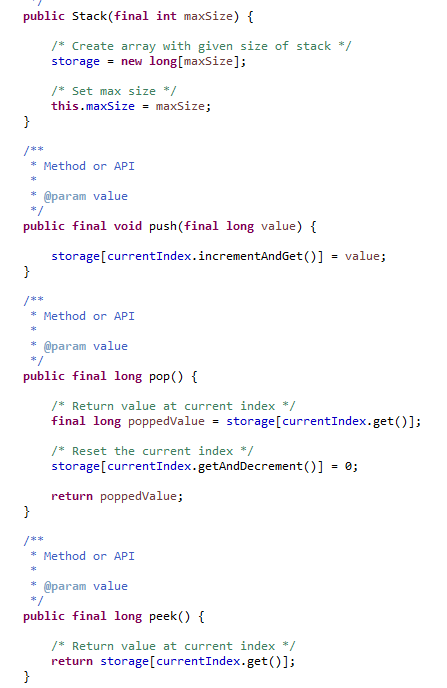
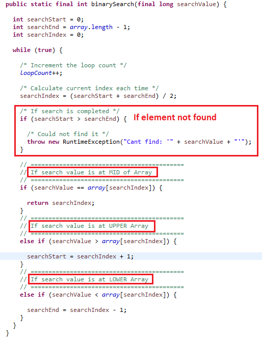
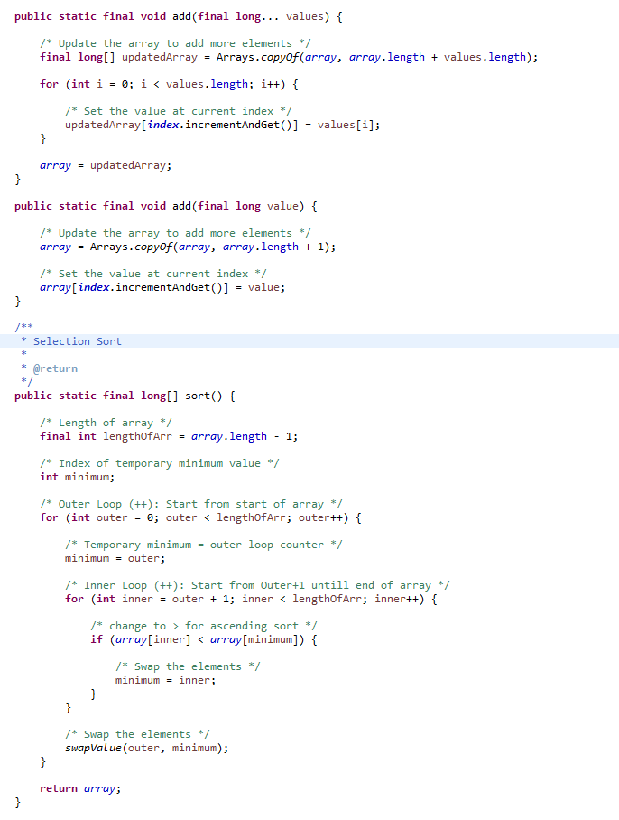
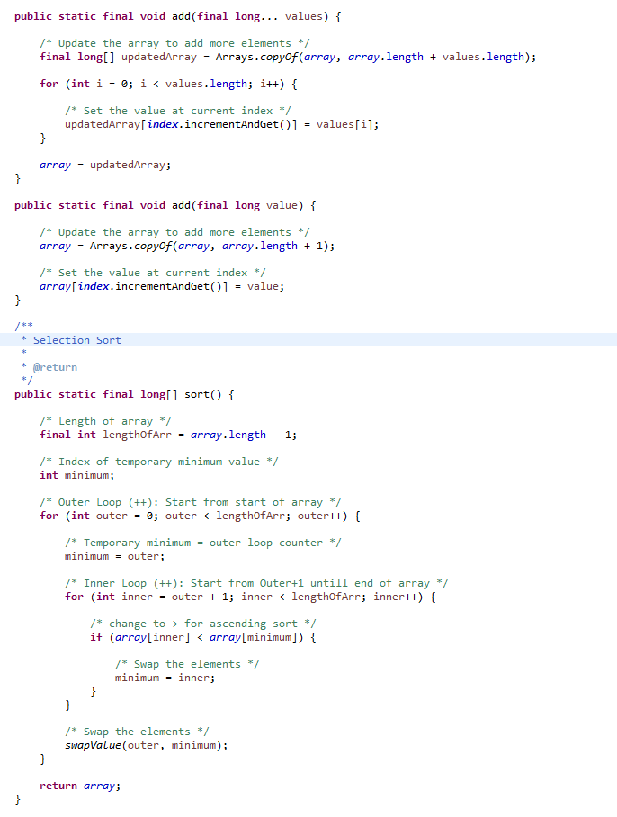

| nist.gov |
Dictionary of all computer algorithms |
| bigocheatsheet.com |
Complexity of all Data Structure Operations |
| usfca.edu |
Data structure visualizations |
| rob-bell.net |
Big O simplified: O (1), O (N), O (N^2), O (2^N)
Big O describes the Worst-Case scenario, can be used to describe the Execution Time or the Space Used
|
| github.com |
All Abstract Data Types and relative algorithms |
|
github.com
github.com
|
Stack  |
|
github.com
github.com
|
Queue |
| github.com |
Linked list |
|
github.com
usfca.edu
|
Binary search tree (BST)
NOTES
|
| github.com |
Liner/Binary Search  |
| github.com |
Bubble/Selection/Insertion Sort
 

|
| geeksforgeeks.com |
Sorting 1 million integers using counting sort |
| wikipedia.org |
Skip List for faster traversal by maintaining a linked hierarchy of subsequences
ConcurrentSkipListSet/ConcurrentSkipListMap in Java are based on Skip List
|
| github.com |
Bit wise And (&) for finding Even/Odd numbers |
| github.com |
Prime numbers using square root (SQRT) |
| quora.com |
Difference between Binary Tree and Red Black Tree
Red Black Tree will reorganise itself so that you will always get O(log(N)) complexity
|
|
github.com
github.com
|
Anagram in Java/Scala |
|
github.com
github.com
|
Word frequency in a statement in Java/Scala |
|
ericsink.com
stackoverflow.com
|
Graph: structure consisting of nodes, that are connected to each other with edges
Directed: the connections between the nodes (edges) have a direction: A -> B is not the same as B -> A
Acyclic: "non-circular" = moving from node to node by the edges, and never encounter the same node again
Directed Acyclic Graphs (DAG):
- Their edges show direction
- They don't have cycles
|